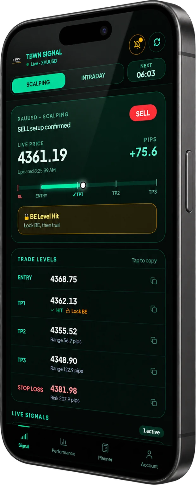
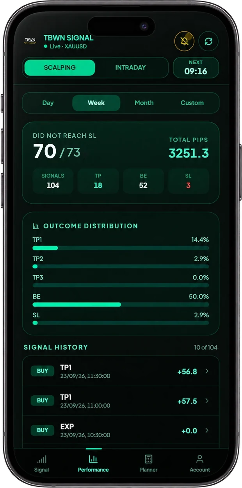
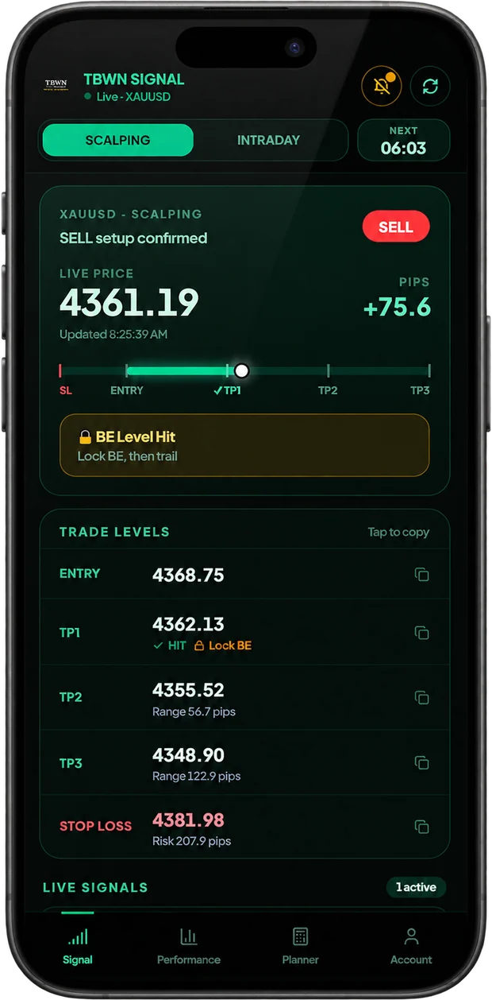
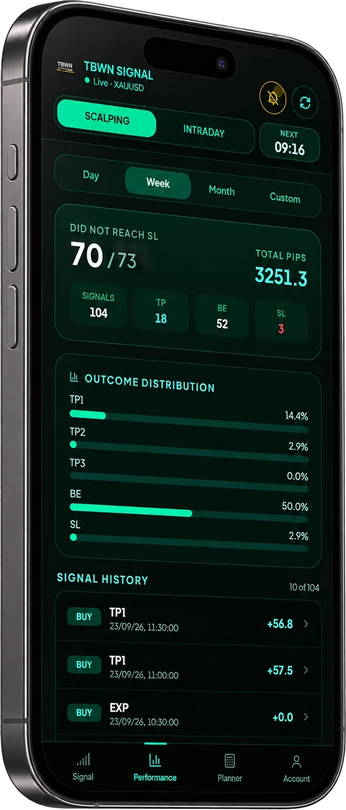
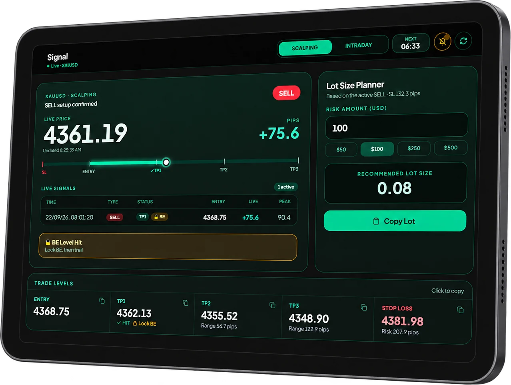

The price level used to define the setup. Review it with the stop loss, targets and your own risk limits.
XAUUSD / STRUCTURED SIGNALS
STOP CHASING GOLD.
START FOLLOWING A PLAN.
Structured XAUUSD signals built around Entry, Take Profit, Stop Loss and risk.
See how TBWN works →XAUUSD ONLYREAL-TIME SIGNALSRISK PLANNER


01 / THE SETUPONE SIGNAL.
ONE SIGNAL.
A COMPLETE SETUP.
No vague direction. No missing exit. The structure is visible before you decide.
Defined target levels.
Risk defined before entry.
Plan position sizing around your own risk parameters.
Know when a new setup is available.
02 / PRODUCT PROOFSEE TBWN
SEE TBWN
IN ACTION.
Don’t take our word for it. Read the plan, inspect the levels, then review the recorded outcome.


THE DASHBOARD
Every setup includes the same core information.
- Direction, reference entry, stop loss, target levels and risk-planning data on every setup
- Live price and running pips while the trade breathes
- Scalping and intraday, on market days
- Tap any level to copy it into your platform
LOT SIZE PLANNER
Your risk, already calculated.

03 / THE RECORDCOMPLETE TBWN
COMPLETE TBWN
SIGNAL RECORD.
Every published signal is shown, including take-profit, managed close, break-even, stop-loss and expired outcomes. Results are based on TBWN records and are not independently audited.
746 further signals expired without an entry and count neither way. A managed close is a trade whose stop was moved after it reached +30 pips (scalping) or +50 pips (intraday) and which then closed before a target. The record does not log a separate zero-pip break-even: every such trade is a managed close and is credited with 80% of the maximum favourable movement recorded before closure (total +171,397 pips on this basis). That 80% is a recording method, not a take-profit and not a guaranteed result; a trader who closed at entry made close to zero. Figures as of 5 October 2026, since 12 June 2026. Past results are not a promise of future ones, and every trade is placed by you. How the record is counted →
RISK
04 / TRANSPARENCYNOT EVERY
NOT EVERY
TRADE WINS.
“A trading tool earns trust by showing the full record—not just the comfortable parts.”
Trading involves risk. TBWN does not promise profits or eliminate losses. Our purpose is to provide structured XAUUSD setups with defined Entry, TP and SL levels.
You remain responsible for your trading decisions and risk.
View the full record →05 / THE WORKFLOWFOUR STEPS.
FOUR STEPS.
NO THEATRE.
SIGNAL ARRIVES
XAUUSD setup becomes available.
REVIEW THE PLAN
Entry. TP. SL. Risk.
YOU DECIDE
Review the setup and decide whether it fits your own trading plan.
TRACK THE OUTCOME
Results are recorded transparently.
HERE’S THE STRUCTURED SETUP. YOU DECIDE WHETHER TO EXECUTE IT.
06 / ACCESSCHOOSE
CHOOSE
YOUR PLAN.
Start with the time you need. Every plan gives you the same TBWN workflow. Each is a one-time payment, with no automatic renewal.
5 TRADING DAYS OF ACCESS
$17 $34Promotional price USD 17. Regular price USD 34. Valid for 7 calendar days from activation. One-time payment. No automatic renewal.
Choose Emerald →UP TO 11 TRADING DAYS OF ACCESS
$33 $66Promotional price USD 33. Regular price USD 66. Valid for 15 calendar days from activation. One-time payment. No automatic renewal.
Choose Sapphire →UP TO 11 MORE TRADING DAYS FOR $22 MORE
DIAMONDUP TO 22 TRADING DAYS OF ACCESS
$55 $110Promotional price USD 55. Regular price USD 110. Valid for 30 calendar days from activation. One-time payment. No automatic renewal.
Choose Diamond →Trading days are Monday to Friday. A key runs on calendar days, so the number of trading days depends on the day you start. Promotional prices apply to new purchases until 30 November 2026; after that the regular price applies. These plans are for every customer. Brunei account holders can also buy access through the Brunei top-up (USD 20 / 50 / 100 packages, shown in BND).